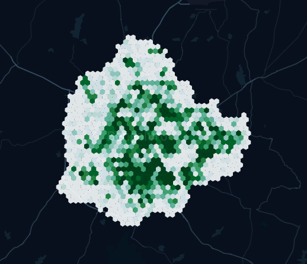

Product Documentation¶
Examples¶
1. Read Infrastructure and Demographic Data inside a custom Polygon¶
Infrastructure variables include examples such as Restaurants, gyms, Grocery stores, etc and demographics include variables such as Population and Area of the given custom polygon. There are a lot of open-sourced tools from where you can draw a polygon and get its coordinates(such as kepler.gl and geojson.io). These variables help to analyze different prospects of areas of interest.
# Import Libraries
import requests
# Define a closed polygon
data = {
"coordinates": [
{"lat": 13.388617618153711, "lng": 77.57514029874933},
{"lat": 12.81883149952699, "lng": 77.03310705621149},
{"lat": 12.752539132573569, "lng": 77.59368896484375},
],
"status": "False",
}
Base_URL = ""
response = requests.post(Base_URL + "/post_json", json=data)
data = response.json()
print(data)
{
"Area": "2133880086",
"Demographics": {
"Female": "3431369",
"Houses": "2648272",
"Male": "3050565",
"Population": "6481934"
},
"Infra": {
"Apartments": "41",
"Bus Stops": "1079",
"Cinemas": "124",
"Colleges": "1977",
"Grocery_Stores": "505",
"Gyms": "778",
"Office Parks": "18",
"Pan Shops": "399",
"Police stations": "109",
"Restaurants": "2061",
"Sports Club": "28",
"Warehouse and Godowns": "1707"
}
}
2. Find out Reachability from a specific point of location and properties inside the returned contours of polygons¶
The Isochrone support from our API is intuitive in a way that given a routing profile you will be able to get the information regarding the "within-reach" areas. It helps you analyze whether there is a sufficient count of variables of your interest around you. For eg. You are on a vacation and you want to find out how many tourist spots or delight restaurants are around your location within the walking limit.
# Define Imports
import geopandas as gd
import pandas as pd
import requests
from keplergl import KeplerGl
from shapely.geometry import Point, Polygon
# Define the request parameters
"""
coordinates:Coordinate pair around which to center the isochrone lines.
contour_minutes:The time in minutes to use for each isochrone contour
profile:routing profile(driving,walking,cycling)
"""
payload = {
"coordinates": "77.5946,12.9716",
"profile": "cycling",
"contours_minutes": "15",
}
Base_URL = ""
response = requests.post(Base_URL + "/isochrone_api", json=payload)
data = response.json()
coords = [float(i) for i in payload["coordinates"].split(",")]
columns = ["point_lat", "point_lng", "icon"]
icon = pd.DataFrame([coords.append("route-dot")], columns=columns)
isochrone = gd.GeoDataFrame(index=[0], geometry=[Polygon(data["coordinates"])])
map = KeplerGl(height=500, data={"icon": icon, "isochrone": isochrone})
map
print(data["data"])
{
"Demographics": {
"Female": "4857320",
"Houses": "3476412",
"Male": "4379339",
"Population": "9236659"
},
"Infra": {
"Apartments": "119",
"Bus Stops": "1850",
"Cinemas": "207",
"Colleges": "3667",
"Grocery_Stores": "1412",
"Gyms": "1575",
"Office Parks": "119",
"Pan Shops": "966",
"Police stations": "220",
"Restaurants": "6685",
"Sports Club": "48",
"Warehouse and Godowns": "1869"
}
}
3. Visualize a Heatmap for your Choice of Variable¶
Heatmap is a data visualization technique that helps analyze the magnitude of variables of interest. Suppose you are planning to open a restaurant in an area it is good to analyze your competition in different parts of the city.
import requests
from keplergl import KeplerGl
args = {"var": "rest_count"}
Base_URL = ""
response = requests.get(Base_URL + "/sheatmap", params=args)
data = response.json()
heatmap = pd.DataFrame(data)
map = KeplerGl(height=500, data={"data": heatmap})
map
